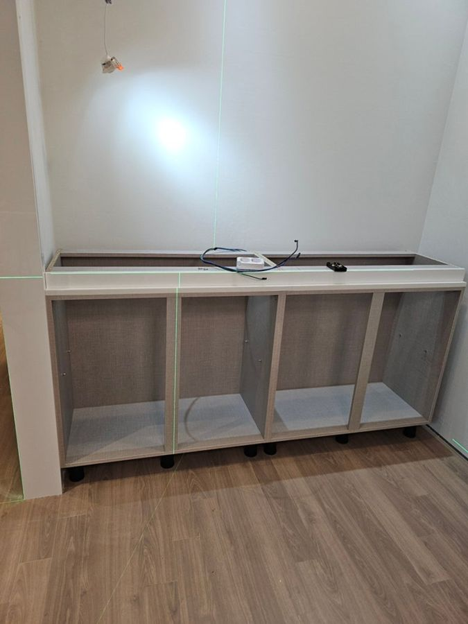
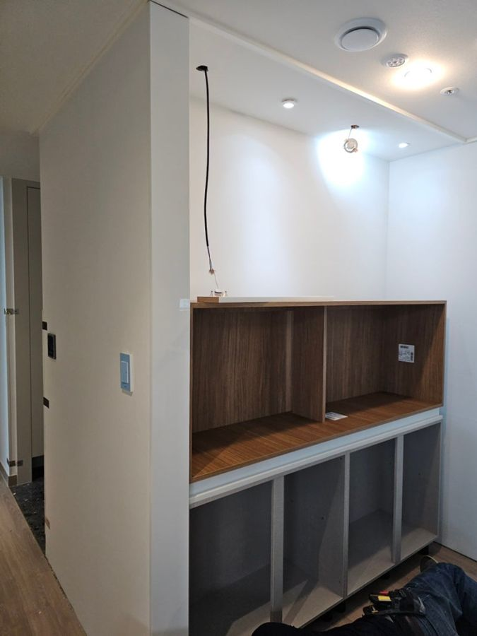
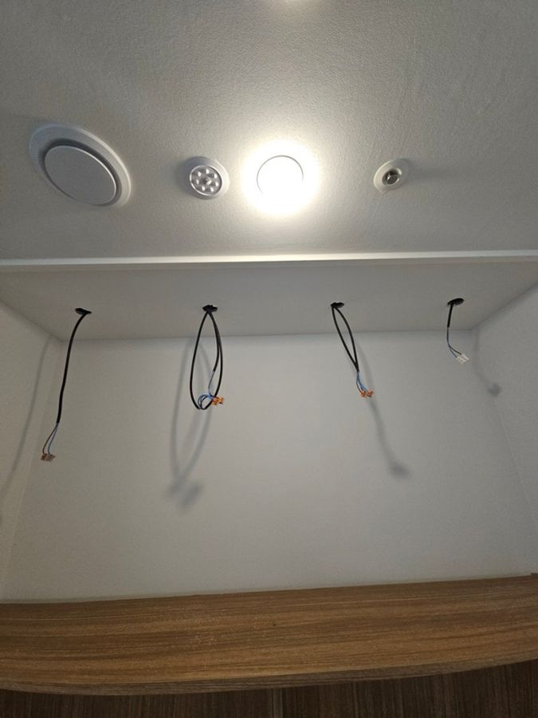
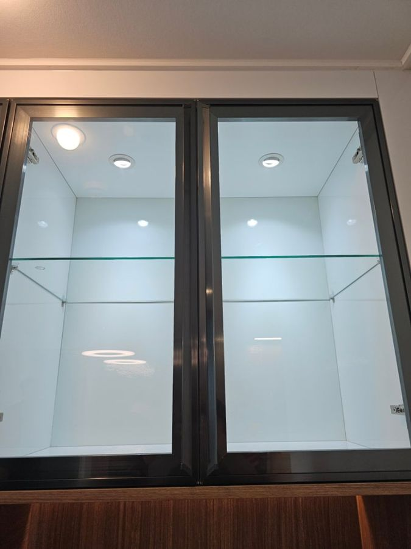

- 지역
- 청주
- 작업
- 홈바·신발장
- 작업일
- 2025.04.13
이런 상황이었어요
아무것도 없이 비어 있는 공간이었어요. 위스키나 양주를 예쁘게 보관하고 싶어서, 안에 밝은 조명이 들어오고 유리문으로 내부가 보이는 장을 원하셨어요.
이렇게 작업했어요
- 실측 후 제작
미리 방문해 실측하고 자재를 준비한 뒤 다시 일정을 잡아 시공했어요.
- 하부장 수평 설치
레이저 레벨기로 수평을 확인하며 생활용품을 넣을 하부장을 설치했어요.
- 오픈 홈바장
문 없는 홈바장을 올려 고정하고 위쪽에 간접등을 넣었어요.
- 전시장 배선·조명
전기 배선을 먼저 하고 일정한 간격으로 타공해 유리문 전시장에 조명을 연결했어요.
- 도어·작동 확인
하부장 문을 달고 문 여닫힘과 조명 작동을 고객님과 함께 확인했어요.




작업 결과
조명 들어오는 유리문 전시장과 간접등 홈바장, 하부장까지 한 벽에 완성됐어요. 고객님이 인테리어한 곳 중 가장 마음에 든다고 하셨어요.
알아두면 좋아요
가구에 조명을 넣을 때 전기 배선까지 함께 할 수 있으면 전기 기사를 따로 부르지 않아도 돼요.